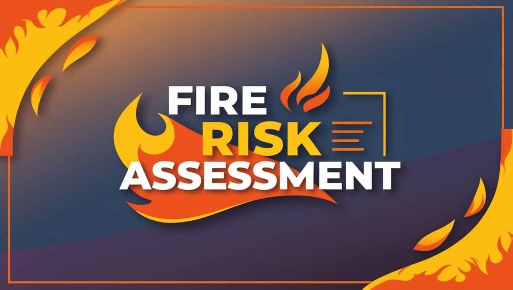

EMAIL
admin@emagrace.co.uk
admin@emagrace.co.uk
PHONE
+44(0)7404266005
+44(0)7404266005
At Emagrace Consultancy Limited, we provide high-quality, reliable, and person-centred services designed to support children, young people, vulnerable individuals, and care providers. Our work is grounded in safeguarding, professionalism, and a commitment to delivering meaningful outcomes.

We provide comprehensive compliance checks and quality assurance visits for health and social care providers. Our assessments help organisations meet regulatory expectations, strengthen internal processes, and maintain high standards of care, safety, and operational excellence.

Our trained and experienced mentors provide structured guidance, emotional support, and positive role-modelling for confidence, develop life skills, set goals and navigate challenges in a safe and supportive environment.

We offer thorough and impartial Regulation 44 visits for children's homes, ensuring compliance with statutory requirements and best-practice standards. Our independent visitors provide detailed assessments, constructive feedback, and clear recommendations to support continuos improvement and positive outcomes for young people.

Our professional team acts as Appropriate Adults for young people and vulnerable adults during police interviews and custody processes. We ensure their rights are upheld, their welfare is protected, and they are supported throughout the procedure with dignity and fairness.

Our Fire Risk Assessment Service provides a comprehensive, compliance-focused evaluation of your premises to ensure full alignment with the Regulatory Reform(Fire Safety) Order 2005, the Fire Safety Act 2021, and all relevant sector-specific standards. We suport organisations in indentifying fire hazards, reducing risks, protecting occupants, and demonstraiting robust due diligence to regulators, insures, and stakeholders.

In addition to fire safety, Emagrace Consultancy Limited provides comprehensive Water Risk Assessments and Inspections, supporting compliance with HSE Approved Code of Practice (ACoP) L8 and HSG274 for the control of Legionella and other water‑borne risks.
Our Water Safety Services Include:
These services help organisations prevent water‑borne hazards, reduce operational risks, and maintain a safe environment for vulnerable individuals.
We deliver timely, sensitive, and trauma-informed Return Home Interviews for young people who have been missing. Our approach prioritises safety, understanding, and early intervention, helping to identify risks, reduce repeat missing episodes, and strengthen protective factors.